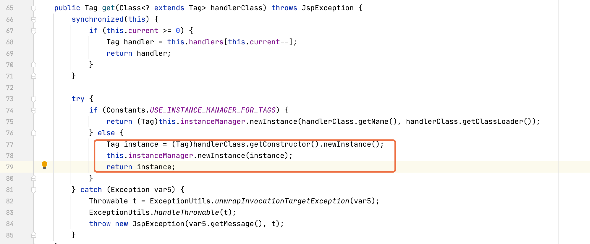
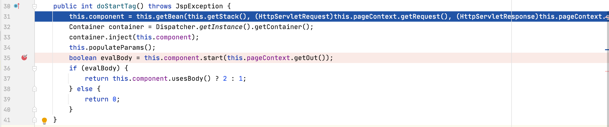
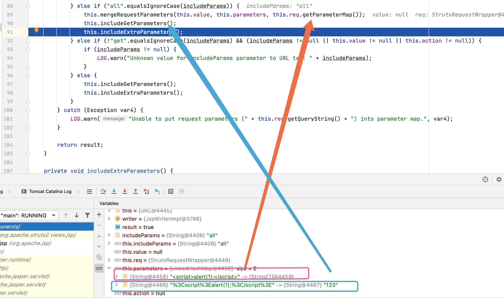
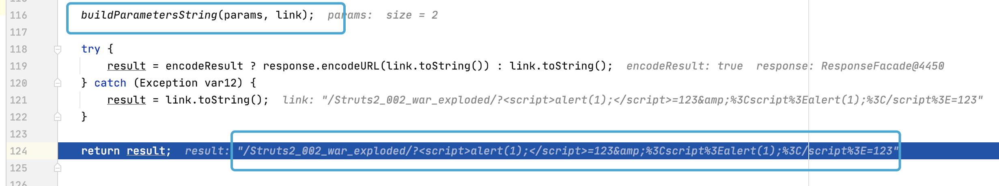
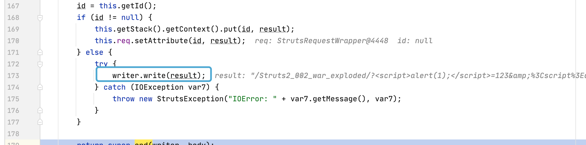
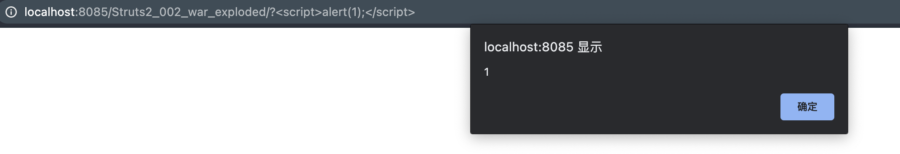

Struts2漏洞笔记之S2-002
漏洞原理
<s:url>或<s:a>接收用户输入调用Request.getParameterMap直接获取没做过滤处理回显至当前界面造成XSS
漏洞版本
1 | Struts 2.0.0 ~ Struts 2.1.8.1 |
漏洞详解
URLTag将url标签转换为对象
当处理<s:url>标签时调用class org.apache.struts2.views.jsp.URLTag将标签相关属性通过set方法置于URLTag对象中并返回。

doStartTag构建标签组件并解析相关属性
初始化URLTag对象后，开始进行标签解析执行ComponentTagSupport::doStartTag()方法.该方法做了以下事情，
1.引入当前数据栈与上下文载入getBean方法中，会进一步调用URLTag::getBean方法返回org.apache.struts2.components.URL对象
2.container.inject(this.component);将当前标签构建注入到新的容器中方便管理
3.通过this.populateParams();进一步调用URLTag::populateParams()方法,完善URLTag::getBean返回的URL对象
4.调用URL::start方法解析属性

跟进URL::start方法，主要是通过开发人员设置的includeParams值存入相关输入到this.parameter字段中。当设置includeParams="all"进入相应的逻辑处理.
1.this.mergeRequestParamters利用Rquest::getParameterMap获取未经过编码后的输入
2.this.includeGetParamters利用Rquest::getQueryString获取URL编码后的用户输入
3.this.includeExtraParameters没做特殊处理一般为null
综上最直观造成xss是由Rquest::getParameterMap获取用户输入并为做过滤，如果置includeParams='get'只能调用Rquest::getQueryString返回用户输入经过URL编码.

doEndTag处理输出内容并写入当前jsp页面中
doEndTag更直观是对最后的输出做处理

跟进UrlHelper::buildUrl方法，对最后输出result进行拼接，依次拼接当前访问的WEB路径、this.paramters中的两个值。

URL::end最后收尾没有调用模版写入，而是直接调用write写入当前jsp页面中.

漏洞复现
1 | http://localhost:8085/Struts2_002_war_exploded/?%3Cscript%3Ealert(1);%3C/script%3E |


漏洞修复
比较懒,只是单纯的替换了script字符串很容易绕过.